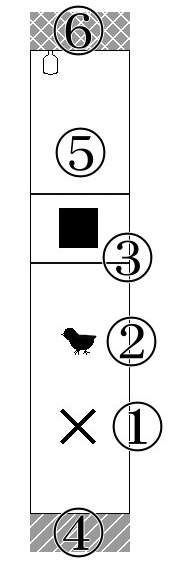

1．はじめに
このシナリオは“クトゥルフ神話TRPG（第6版）”に対応している。
シナリオの舞台となる場所は、狭く暗く、視覚の利かない密室である。時代、季節は特に指定しない。KPが自由に設定してよい。
戦闘は基本起きない、探索中心のシナリオだ。尚、全技能ロールに失敗したとしても、探索者の行動でクリア可能である。
隠された真実を究明することを主旨とはせず、不可解な体験を楽しむ類の内容となっている。
・推奨人数：1～2名
・プレイ時間：1時間程度
・本文：
・推奨技能：〈聞き耳〉
事前のPLへの案内に関して、必要に応じて情報を追加いただきたい。
不可解な体験を楽しむ類のものだと伝えることは、PLにシナリオへの参加スタンスを示すことになる。
閉じ込められる場所が暗く狭い場所であることを伏せておき、非日常に巻き込まれる演出をしてもよいだろう。
不可解な体験を楽しむ類のものだと伝えることは、PLにシナリオへの参加スタンスを示すことになる。
閉じ込められる場所が暗く狭い場所であることを伏せておき、非日常に巻き込まれる演出をしてもよいだろう。
シナリオ記載の凡例はこちら
2．KP向け情報
シナリオ背景
探索者は運悪くツァトゥグアの狂信者たちに生贄として選ばれた。探索者が目を覚ました場所は、ツァトゥグアの祭殿の一部だ。無形の落とし子たちが周囲に大量にはりついており、光が一切さえぎられた空間となっている。（体内にいるわけではないので消化はされない。）
近くにはツァトゥグアが座り込んでいる。
ツァトゥグアや無形の落とし子たちは、連日の生贄のこともあり、基本探索者に害を与えない。その場から逃げようとしても追ってくることはないだろう――彼らに害さえ与えなければ。幸い、脱出に使える『門』は用意されていた。
彼らからすれば探索者たちを逃がしたところで、次なる生贄はくるのだから。
このシナリオは、この空間、もとい、ツァトゥグアの祭壇から脱出することでエンディングを迎える。
脱出は、探索により発見した箱を開けるか、扉を開くことで果たされる。
紹介
氷守緋羽さまがシナリオの素材を作ってくださいました。ありがとうございます！【壁の中にいる 素材】
この場を借りて紹介させていただきます。
これから遊ばれる方は、よろしければご活用ください。
3．主要NPC
ツァトゥグア
今回は触り心地のよい壁役。
比較的無害、好きな食べ物はとり肉（という今回限りの勝手な設定）。
具体的な能力値は基本P.220参照
正気度喪失：暗闇のため無しとする。少し不穏な空気を感じる程度
比較的無害、好きな食べ物はとり肉（という今回限りの勝手な設定）。
具体的な能力値は基本P.220参照
正気度喪失：暗闇のため無しとする。少し不穏な空気を感じる程度
無形の落とし子
今回は柔らかいようで硬い壁役。珍しく無害。
何も囁いてないあたりオフの日なのかもしれない。
具体的な能力値はルルブP.193参照
正気度喪失：暗闇のため無しとする。少し異様な空気を感じる程度
何も囁いてないあたりオフの日なのかもしれない。
具体的な能力値はルルブP.193参照
正気度喪失：暗闇のため無しとする。少し異様な空気を感じる程度
小鳥
迷い込んでしまった小鳥。
能力値：
//STR=5
//CON=10
//SIZ=4
//POW=10
//DEX=10
耐久力 7
正気度喪失：なし
能力値：
//STR=5
//CON=10
//SIZ=4
//POW=10
//DEX=10
耐久力 7
正気度喪失：なし
行動指針
探索者への危険の警告役であり、箱の取得の妨害役である。時に犠牲となり、探索者の正気を喪失させるだろう。癒し枠として、探索者の周りでちょこちょこと動かしてやってもよい。その場合、頬ずりや肩に乗ったりと、人懐っこい性格を見せるとよいだろう。
鳥の種類はとくに定めていない。
候補としては夜行性のヨタカ（鳴き声：ピヨィピヨィ/キョキョ……）がある。
ただし、一般に鳩ほどのサイズ感の鳥のため、手乗りさせる等を考えるのであれば、スズメやシジュウカラ等の鳥が現実的だ。
クトゥルフ神話における「ヨタカ」（夜鷹、ウィップアーウィル）は、ダンウィッチ土着の風説で怖れられている、魂を攫う存在である。
犠牲という点では、宮沢賢治著『よだかの星』も連想されるだろう。
候補としては夜行性のヨタカ（鳴き声：ピヨィピヨィ/キョキョ……）がある。
ただし、一般に鳩ほどのサイズ感の鳥のため、手乗りさせる等を考えるのであれば、スズメやシジュウカラ等の鳥が現実的だ。
クトゥルフ神話における「ヨタカ」（夜鷹、ウィップアーウィル）は、ダンウィッチ土着の風説で怖れられている、魂を攫う存在である。
犠牲という点では、宮沢賢治著『よだかの星』も連想されるだろう。
4．導入
何気ない日常をおくっていたある日、探索者は何らかのきっかけがあり意識を失う。意識を取り戻した時には、探索者は暗闇の中にいた。
目を覚ますとそこは暗闇であり、周りに何があるのかは認識できない。ただ理解できない事態に、言い知れない不安が自身の中からせりあがってくるのがわかる。
身動ぎしようとしたところであなたは、その場所が異様に左右に狭いことに気付く。そう、まるでここが空間と空間のあいだにある、ほんの狭い隙間のように。
――――壁の中にいる。そんなフレーズがあなたの頭の中をよぎった。
身動ぎしようとしたところであなたは、その場所が異様に左右に狭いことに気付く。そう、まるでここが空間と空間のあいだにある、ほんの狭い隙間のように。
――――壁の中にいる。そんなフレーズがあなたの頭の中をよぎった。
探索者が意識を失うきっかけは、KPが自由に設定してよい。
異様な眠気に急に襲われ倒れてしまう、スーツ姿でサングラスをかけた男たちに殴られて気絶など。
以下は導入の例である。
例「ふしぎなであい」
都会、アスファルトの上にどんぐりが一つ落ちている。これは探索者以外の目には見えていないらしい。そのどんぐりの傍を白いウサギのような塊が通る。どんぐりは、この白い塊の落としたもののようである。白い塊は路地裏に消えていった。
不思議な力に誘われているかのように、探索者は白い塊を追って路地裏へと引き寄せられてしまう。路地裏に入ったところで意識は暗転する。
例「黒フードの影」
夜、帰宅途中。探索者は尾行されていることに気付く。・振り返る場合
黒いフードをかぶった人影が佇んでいる。
次の瞬間にはその人影は探索者の目前にまで移動している。
・振り返らない場合
足音が近づいてくる。探索者は追いつかれ、追い抜かれる。
黒いパーカーをかぶった人影が探索者の前に出る。人影は立ち止まり、こちらを振り向く。
探索者は足が地面に縫い付けられたかのように動けなくなるだろう。
人影がフードをぬぎ、フードの下が露になるが、探索者はそれが何なのかを確認する前に意識を闇に飲まれる。
5．探索
身体を動かそうとすれば、この空間が前後にひらけていることが分かる。
人一人が通れるくらいの横幅、高さはあるようなので、移動はできそうだ。
人一人が通れるくらいの横幅、高さはあるようなので、移動はできそうだ。
この空間に対する探索は、〈聞き耳〉に加え、まわりをぺたぺたと撫でまわしたり、手に伝わる感覚から材質などを調べることが可能だろう。
探索者が複数人の場合、しゃがんだ探索者を別の探索者がまたぐ形で順列を変えることが可能だ。
この空間について
空間は以下見取り図のようになっている。（この図はPLには公開しない）
(1)の場所にいる時点で探索者たちは全員(6)の方向を向いている。
便宜上、(1)からみて(6)の方向を「前」、(4)の方向を「後ろ」とする。
見取り図
服装・所持品
・服装を確認する服は着ている。意識を失う直前と同じ服装だ。
・探索者が「ライター」他、火に関する道具を持っていた場合
確かに持っていたはずのそれが、いつの間にかなくなっている。
〈アイデア〉
その道具が、ここに探索者を連れ去った「誰か」に奪われたことを確信する。
他の物は一切奪われておらず、その道具のみ奪われているということから、探索者をここに連れてきた者には、明るいもの、もしくは火を使われたら不都合な「何か」があるのではないかと考えるだろう。
・火に関する道具以外の持ち物
身に着けていた持ち物は、相変わらず手元にあるようだ。
この空間での探索行動
視界情報を必要とする行動
・〈目星〉〈機械修理〉〈製作〉など視覚情報あってこその技能全般は自動失敗とする。
道具を使用した行動
・「携帯電話」「懐中電灯」など、光源になりそうな道具を使用する場合不思議なことに、電源がつかない。
・「アナログ時計」
音がしない。秒針が止まっているようだ。
空間の広さを調べる
・音を発生させ、それに対して耳をそばだてるどこまでも広大で開けた空間で音を出したかのように、跳ね返っても来ず響きもしなかった。
〈アイデア〉
横に壁らしきものがあるのに、反響がないのはおかしい。ここが超常的かつ異常な空間だということを本能的に感じ取り恐怖する。
▶ 正気度喪失 0/1
壁や床を調べる
・直接触れる触るとつるりとしている。硬質的で、温度を感じない。
一瞬、その壁が動き出し、膨らみ、自身を呑み込むかのように錯覚するが、おそらく気のせいだろう。
・壁や床に対して耳をそばだてる
何か音が聞こえる。
〈聞き耳〉
ごく小さな音がノイズのように聞こえる。それは一定の言葉を刻んでいるようだった。
よくききとろうと耳を澄ませると、泡が囁くような、人間の物とは思えない不気味さ、不快かつ忌々しい発音で、言葉が聞こえた。それは決して音ではなく、言葉のはずなのに、あなたにはその言葉が何なのか分からなかった。
あなたの意志に関わらず、むかむかとするような感覚と、理解できないものへの恐れで胸が支配され、思わず壁から耳を離すだろう。
先ほどまで聞こえていた音が、まだ耳鳴りのように聞こえる。
▶ 正気度喪失 1/1d2よくききとろうと耳を澄ませると、泡が囁くような、人間の物とは思えない不気味さ、不快かつ忌々しい発音で、言葉が聞こえた。それは決して音ではなく、言葉のはずなのに、あなたにはその言葉が何なのか分からなかった。
あなたの意志に関わらず、むかむかとするような感覚と、理解できないものへの恐れで胸が支配され、思わず壁から耳を離すだろう。
先ほどまで聞こえていた音が、まだ耳鳴りのように聞こえる。
探索者がもう一度耳を付けて聴こうとした場合、部分的に「うがあ……ん……ゆふ」という言葉が聞こえる。
・壁を登ろうとする
壁を撫でて調べてみても、指を引っ掛けられるような凹凸はない。
視覚情報が一切ない状態で登ることは難しく、〈登攀〉は自動失敗とする。
KPが処理できるのであれば、その限りではない。
・壁や床の材質を確認しようとする
〈知識1/2〉〈地質学〉など
その床、その壁が、自身にとって未知の材質であることを確信する。
・(1) 最初の場所
導入シーン終了の時点で探索者はここにいる。探索者が前に進むか後ろに進むかを確認し、前なら(2)、後ろなら(4)の項目の記述処理に移ること。
他の項目の処理が終わった後の場合も、前に進むか引き返すかを尋ねて、探索者を移動させる。
PLが自主的に確認したい事項、振りたい技能などがあれば、KPに告げるよう伝えておくことを推奨する。
・(2) 小鳥
いくらか進んだところで探索者は何かばさばさという羽音と、ピヨィピヨィという鳴き声を近くで聞く。音の主は小型の鳥であることに、察しが付くことだろう。
・探索者がさらに移動しようとしたところで
〈聞き耳〉
小鳥が探索者の後ろをついてきていることに気付く。
KPがこの小鳥を癒し枠、あるいは、後の犠牲者として扱う場合。
遭遇した小鳥が探索者の肩に乗り、自分の存在をアピールするようにふわふわとした身をこすりつけ、甘えるように鳴くような描写を行うとよいだろう。愛らしい小鳥の動作が好ましい。多少あざとくてもよい。
遭遇した小鳥が探索者の肩に乗り、自分の存在をアピールするようにふわふわとした身をこすりつけ、甘えるように鳴くような描写を行うとよいだろう。愛らしい小鳥の動作が好ましい。多少あざとくてもよい。
・(3) 台と四角い何か
探索者は台座にたどり着く。台座には四角い何かが置かれている。
小鳥と出会い、しばらく進んだところで探索者は小さな段差に転ぶだろう。そして顔面を衝撃が襲う。
壁のようなところに顔を打ち付けたと理解できるだろう。
▽:HP-2壁のようなところに顔を打ち付けたと理解できるだろう。
小鳥の鳴き声で段差の警告を行い、耐久力減少を回避させてもよいだろう。
探索者が複数名の場合は、最前列を歩く探索者のみが転ぶことになる。
尚、探索者が暗闇を這って進んでいた場合、転倒は回避されるだろう。
探索者が複数名の場合は、最前列を歩く探索者のみが転ぶことになる。
尚、探索者が暗闇を這って進んでいた場合、転倒は回避されるだろう。
台座について
探索者の顔を打ち付けた場所は、探索者くらいの背の高さの台座になっているようで、撫でまわすことで台座の上に手のひらほどの大きさの四角いものがあることがわかる。四角いものに触れると、まるで嫌なものをみてしまったような感覚に陥る。
四角いもの自体は、ひんやりとした陶器のような冷たさを持っている。
この台座は祭壇であり、四角いものは門の呪文を内に込めた箱である。
台座から四角いものを取り外そうとする
小鳥がいる場合
持ち上げる・手に取ろうとするなどして、台座から四角いものを取り外そうとしたとき、小鳥は警告するようにけたたましく鳴く。それから探索者は腕にのしかかるような羽毛の感触と重みを感じるだろう。
この箱を持つことは許さないというように、小鳥は箱の上に乗ってしまったようである。そのせいか箱は持ちあがらない。
その場を探索者が離れようとすると、小鳥はまたバサバサと羽音をさせる。どうやら箱の上から退いたようで、探索者についてくる。
しかし、探索者がまた箱を取ろうとすれば、小鳥は箱の上に乗ってしまう。
・この箱を探索者が手にするには
鳥を気絶させる、死亡状態にする、箱をあきらめたふりをして小鳥が箱の上を退いた時を狙うなど、鳥をどうにかする必要がある。
KPが可能と判断する方法で鳥を対処し、箱を手に取ることができる。
小鳥はこの魔術的要素の籠った箱を本能的に脅威と捉えており、箱をこの場から動かすことを妨害している。
鳥の死亡処理については、「(4) ふわふわな壁」に近づき鳥が捕食される、探索者の攻撃で鳥の耐久力が0以下になる、など。
鳥との戦闘は、鳥は箱の上を不動であり探索者に攻撃はしてこないため、探索者の攻撃のダメージロールのみ処理する形になる。
鳥の死亡処理については、「(4) ふわふわな壁」に近づき鳥が捕食される、探索者の攻撃で鳥の耐久力が0以下になる、など。
鳥との戦闘は、鳥は箱の上を不動であり探索者に攻撃はしてこないため、探索者の攻撃のダメージロールのみ処理する形になる。
四角いものを手に取る
この四角いものを手にすると、コトリと音をさせて台座が消える。台座が消えたことに気づいた探索者は不可思議な現象に驚く、あるいは恐怖するだろう。
▶ 正気度喪失 0/1
台座が消えたことでこの先の道「(5) 通路」が開かれる。
台座を飛び越える
台座の上には多少の空洞がある。すべてをスルーして跳び越えてもよい。その場合は〈跳躍〉に成功すること。
四角いものについて
四角いものを調べる
手にした四角いものを調べると、非常に軽く、中が空洞になっていることが容易にわかる。軽く叩けば軽い音、木箱を叩いたような音がする。そして、くまなく触ると少し指がひっかけられるようにへこんでいる部分が発見できる。蓋を開閉できる、箱のような構造をしていると分かるだろう。
ここに指を引っ掛けることで、箱は容易に開きそうだ。
この四角いものは、この空間で開いた時にのみ発動する『門』の魔術が込められている。また、中に《門の創造》に関する情報の記載された紙が入っている。
探索者にはその箱がどんなものか、暗がりで詳しくは確かめようがないだろう。
これは硬く冷たい黒色の箱で、手のひらに乗る程度の大きさをしている。何が入っているかは箱を開けない限り、現代科学の粋を集めても確認は不可能だろう。
探索者にはその箱がどんなものか、暗がりで詳しくは確かめようがないだろう。
これは硬く冷たい黒色の箱で、手のひらに乗る程度の大きさをしている。何が入っているかは箱を開けない限り、現代科学の粋を集めても確認は不可能だろう。
捨てる場合
なんの問題もなく手放せる。投げるもしくは床に置くだけでよい。開けずに持ち帰る場合
箱を持ち帰ることができる。「7．クリア報酬」の記述も参照。この場で四角いもの(箱)を開ける
箱に施された『門』が作動する。探索者は箱に吸い込まれる感覚の後、数秒間不可思議な世界にとばされてしまう。
このとき、手にしていた箱は跡形もなく消える。
▽:MP-1
▶ 正気度喪失 1
探索者の視界に広がるのは、今までの闇とはがらりと変わった色と音のある世界だ。
今まで目にしていなかった明るさに、少し眩しく思うかもしれない。ざあざあと雨音が聞こえる。周囲にあるのは鬱蒼とした草木、どうやら森の中のようである。
空はオーロラめいた青白い光に照らされ、青い霧が濃く広がっている。激しい雨が探索者の身を強く打つ。その生々しく冷たく鈍い水の感覚が、この不可思議な世界が現実のものであることを探索者に告げる。
▶ 正気度喪失 1/1d2今まで目にしていなかった明るさに、少し眩しく思うかもしれない。ざあざあと雨音が聞こえる。周囲にあるのは鬱蒼とした草木、どうやら森の中のようである。
空はオーロラめいた青白い光に照らされ、青い霧が濃く広がっている。激しい雨が探索者の身を強く打つ。その生々しく冷たく鈍い水の感覚が、この不可思議な世界が現実のものであることを探索者に告げる。
この不可思議な世界は地底世界クン・ヤンをイメージしている。
ここにある植物はどれも探索者が見たことのないものであり、さらに言えば現実には存在しうるはずのない植物である。
植物に関する情報は、探索者の技能ロール結果により適宜明かすのものとする。
ここにある植物はどれも探索者が見たことのないものであり、さらに言えば現実には存在しうるはずのない植物である。
植物に関する情報は、探索者の技能ロール結果により適宜明かすのものとする。
そこで探索者の意識は暗転する。
⇒ 「6.エンディング」へ
・(4) ふわふわな壁
最初にいた場所から後ろへとしばらく突き進むと、探索者は前方から少し不穏な空気を感じ取る。さらに進めば、これ以上進むことを遮る壁に接触する。
壁の撫で心地は柔らかく、うっすらと毛が生えているようであたたかい。非常に触り心地はよいだろう。そして明らかに床、左右の壁とは違う材質だと感じる。
武器を用いて攻撃する場合を除き、この壁に衝撃を与えようとするとまるでトランポリンの上ではねたかのようにふわりと押し返される。
その反動は柔らかな優しいものなので、転ぶなどしての床への衝撃ダメージはない。
〈聞き耳〉
特に何も聞こえない。
小鳥がいた場合
小鳥が壁に捕食される。
壁に近づくと、小鳥は「ピョイピョイ」と何か不安げに鳴く。その鳴き声も一瞬のうちに、何かにさえぎられたようにして、消える。
代わりに聞こえるのは何かがゴキンと折れる音。音からして硬いであろうそれを、音を起こしている主はものともせぬ力で、ボキン、ゴキンと折りつづけている。
そこに紛れてペッチャ……ヌッチャ……と粘性のあるような水音がする。
代わりに聞こえるのは何かがゴキンと折れる音。音からして硬いであろうそれを、音を起こしている主はものともせぬ力で、ボキン、ゴキンと折りつづけている。
そこに紛れてペッチャ……ヌッチャ……と粘性のあるような水音がする。
〈アイデア〉
小鳥が『何か』によって残虐に殺され、その水音は『何か』が小鳥を食している音なのだと気づく。
その場から早く去らなければという念に襲われるだろう。
探索者の頬に液体が飛び散ってくる。それが血であることは容易に推測できるだろう。
小鳥はおそらく殺されたのだ。
▶ 正気度喪失 0/1d2
しばらくして小鳥が食される音は聞こえなくなる。
小鳥に名前を付けて呼んでいた場合、小鳥死亡時正気度喪失で減る正気度を+1してもよい。
探索者が襲われたりなどの影響はないが、この奥にクリアに関する情報はないため、探索者が場を離れること・近づかないよう誘導することを勧める。
探索者が襲われたりなどの影響はないが、この奥にクリアに関する情報はないため、探索者が場を離れること・近づかないよう誘導することを勧める。
武器で攻撃する場合
武器は壁に捕食される。
軟らかな壁を切り裂いた感触はなく、ただズプズプといった音が手元から聞こえることがわかるだろう。
上記は刃物で切りかかる場合を想定して描写している。
探索者の使用する武器に応じて適宜描写を変更いただきたい。
探索者の使用する武器に応じて適宜描写を変更いただきたい。
武器から手を離さなかった場合
探索者は武器を握った腕ごと壁にめり込んでいく。それを感じた探索者は、反射的にこのままでは危ないと腕を壁から引き抜こうとするだろう。
この時、STR15との対抗ロールを行う。
RESB({STR}-15)
STR対抗成功時
探索者は何事もなく壁から腕を引きぬけるが、武器は壁の中に残してきてしまうことだろう。
STR対抗失敗時
探索者は壁から無理やり腕を引きはがすことになり、ひどく熱い痛みを感じるだろう。武器は腕の痛みで壁の中に残してきてしまった。
▽:HP-1d2
▽以降、手を使う技能の成功率-20%
己の身に迫った得体のしれないものに探索者は恐怖するだろう。
▶ 正気度喪失 1/1d3
これ以降、壁は何の変動もしない。
武器を複数個所持していてもう一度攻撃するという探索者には、KPは警告をしつつも上記と同じ処理を行うこと。
尚、この時探索者が抵抗なく壁に飲み込まれるという選択をしたなら、容赦なく呑み込み、ツァトゥグアと対峙した場合の慈悲なき処理(基本P.220)を行う。要するに探索者死亡である。
尚、この時探索者が抵抗なく壁に飲み込まれるという選択をしたなら、容赦なく呑み込み、ツァトゥグアと対峙した場合の慈悲なき処理(基本P.220)を行う。要するに探索者死亡である。
・(5) 通路
台座があった先の道に足を踏み出した探索者は、今までとは違ってぬるりとした感覚を床におぼえる。〈幸運〉失敗
探索者は転んでしまうことだろう。
▽:HP-1
再度、同じ場所の床を調べたり先に歩いたりしても異変はなく、床は以前までの硬さを持っている。
匍匐前進の場合等は幸運判定しなくてよい。
・判定を希望する場合のみ
〈アイデア〉
『自身の歩いている硬質な床は、実は柔らかくもなれるのではないか』という考えが浮かぶ。
水溶き片栗粉のようなものだと考えるとわかりやすいかもしれない。柔らかくも、硬くもなる。
ただし、これは無形の落とし子だ。片栗粉と性質は全く異なり、床自身が自分の意思・判断をもって硬さが変わるということまでは、探索者には理解できないだろう。
ただし、これは無形の落とし子だ。片栗粉と性質は全く異なり、床自身が自分の意思・判断をもって硬さが変わるということまでは、探索者には理解できないだろう。
・(6) 扉
探索者は硬い壁に突き当たる。そして取っ手のようなものが壁から突出していることに気付くだろう。
突出している部分を握ると、金属のように冷たくすこしざらざらとしていることがわかる。
この突出している部分は左右に回すことができる。
回すとガチャガチャと音がする。触った手を嗅ぐと錆びた金属のような香りがする。
硬い壁(扉)を調べる
・壁の向こうに聞き耳を立てる場合音は一切しない。無音だ。
・硬い壁を叩いた場合
コンコンと軽い音がする。
〈聞き耳〉〈知識〉〈博物学〉など
木を叩いた音だと分かる。
扉を開ける
ドアノブをひねりながら引くと開く。押しても開かない。
想定していないが、差し込む光を頼りにすれば、視覚関係の技能を使用することができる。
手元に持つ箱が無地の黒いものであることくらいは確認できるだろう。
もちろん、扉の前から離れ暗闇の中に戻ると、視覚は制限される。
手元に持つ箱が無地の黒いものであることくらいは確認できるだろう。
もちろん、扉の前から離れ暗闇の中に戻ると、視覚は制限される。
扉をくぐる
探索者は不可思議な世界に辿り着く。▽:MP-1
▶ 正気度喪失 1
青い光が差し込み、音がなだれ込む。探索者は急な光に目を瞑るだろう。その時に認識するのは激しい雨音だ。
それから薄らゆっくりと目を開けた探索者の視界には、鬱蒼とした草木が映ることだろう。
どうやら森の中のようだ。空はオーロラめいた青白い光に照らされ、青い霧が濃く広がっている。
この時小鳥がいれば、小鳥は雨の中、探索者の肩から空へと飛び立つ。それから薄らゆっくりと目を開けた探索者の視界には、鬱蒼とした草木が映ることだろう。
どうやら森の中のようだ。空はオーロラめいた青白い光に照らされ、青い霧が濃く広がっている。
扉から外へ出た、探索者の身を打つ水の感触は生々しい。
扉から手を離した時点で扉は音を立ててひとりでに閉まり、閉まりきった瞬間には、はじめからなかったかのように跡形もなく消え失せる。
▶ 正気度喪失 1/1d2扉から手を離した時点で扉は音を立ててひとりでに閉まり、閉まりきった瞬間には、はじめからなかったかのように跡形もなく消え失せる。
もう暗闇の中へ戻ることはできない。
空の色が一層明るくなり、オーロラのような波形がゆらゆらと不思議な動きをする。まるで海の揺らめきを見ているかのようだ。
そのうち、あまりの明るさに目をあけていられなくなる。
空の色が一層明るくなり、オーロラのような波形がゆらゆらと不思議な動きをする。まるで海の揺らめきを見ているかのようだ。
そのうち、あまりの明るさに目をあけていられなくなる。
項目「(3) 台と四角い何か」の箱を開けた際にとばされるのと同じ場所である。
そこで探索者の意識は暗転する。
⇒ 「6.エンディング」へ
6．エンディング
次に目覚めるとそこは自室のベッドであり、探索者の服はぐっしょりと濡れている。これが寝汗か、雨のせいかは分からない。
その後、探索者の身には特に何事も起きることなく、日常生活に戻ることになる。
探索者としては、その出来事は悪い夢だったと思うほかないだろう。たとえあの生々しい感覚を思い出したとして、到底現実とは肯定しがたい体験だ。
探索中、転んだ時にぶつけた箇所があれば、その部位にはぶつけたような跡があるだろう。
傷を負っていれば、その傷が痛むことになる。
箱が探索者の手元にある場合
探索者が箱を開けるかどうか、KPは確認を行う。・探索者が箱を開けた場合
探索者が箱を開けた場合、中に折りたたまれたメモが入っているのを見つける。
このメモを広げると緑のインクの小さな文字でびっしり埋められている。
〈母国語〉
そこには呪文《門の創造》(基本P.289,290)に関する記述がされていることがわかる。
▶ 正気度喪失 1d3
▽〈クトゥルフ神話〉+2%
この呪文を習得する場合、2d6+10週間の研究期間を必要とする。
この正気度消失、神話技能加算、習得期間はKP次第で変更可。
「クトゥルフ神話の本から呪文を習得する」(基本p.111-113) 記述も参照することを推奨する。
本シナリオでは、研究期間を+10週間することで、〈INT×3〉の処理を割愛している。
「クトゥルフ神話の本から呪文を習得する」(基本p.111-113) 記述も参照することを推奨する。
本シナリオでは、研究期間を+10週間することで、〈INT×3〉の処理を割愛している。
7．クリア報酬
KPが適当と思われる報酬を適宜追加・変更していただきたい。・最後までプレイした
1d6の正気度回復
・鳥が生存したまま脱出した
1d4の正気度回復
・登場神話生物2種(ツァトゥグア・無形の落とし子)を見破った
PLが解答。1つ正解につき1d4正気度回復。
尚、間違えた場合のペナルティはない。
神話生物に繋がるものとしては、以下のようなものが散りばめられている。
・火に関するアイテムが奪われていた＝火が有効である
・壁のもふもふとした手触り
・床が柔らかい性質を持っている
・「うがぁ……ん……ゆふ」＝「うがあくとぅんゆふ」の推測
・門関連の呪文からの連想
・青い光景＝クン・ヤンのイメージ
8．あとがき
コメント
（2013/05/17）短時間少人数でさっくりやれるシナリオが欲しくて作りました。〈目星〉を使わない探索シナリオというのは、一度はやってみたかった変な試みです。見えない方がよいこともあるのよ。少しでも楽しんでいただければ幸いです。
ツァトゥグアとトトロは似ていると思います。小鳥の死を探索者が悲しんだ場合には、『ドッキリ』の看板を持ったツァトゥグアと笑顔の小鳥のツーショットを見せてあげてください。私も見たいです、そんな光景。
探索者がすっきりしない終わりなのは、H.P.ラヴクラフトの短話の雰囲気を意識してみた結果なのですが……それはつまりKPがほくそ笑む仕様なんだなとなんとなく思いました。書く側としては楽しかったので満足です。
ここまで読了、探索、KPお疲れ様でした。
補遺
・本シナリオの“新クトゥルフTRPG”（第7版）コンバートについて。7版では嗅覚情報を〈目星〉で得られるため、視覚以外の感覚部分で〈目星〉の出番があるかもしれない。
・アレンジの一例としては、最初の時点の前後向きを変えるなど。
・探索者が複数名なら、隠し扉要素などを付け加え、いつの間にかひとり消えている演出を行ってもよいかもしれない。
・小鳥をかばってツァトゥグアに食べられる生きざまは、尊敬するが推奨しない。
・ツァトゥグア繋がりで、「扉を出た先は韮崎という標識のアパートの扉の前だった」等して、「もっとたべたい」等別のシナリオのフックにしても面白いかもしれない。
・探索中、「(6) 扉」付近で何らかの方法で光源となるものを発生させ、暗闇を照らし再探索することまでは考慮していない。
仮に光源を得た状態で探索を行えば、視覚情報で正気度喪失が起きるだろう。特に火は、壁に触れようものなら、探索者の命の危機を覚悟するべきだ。
参考資料
- 『クトゥルフ神話TRPG』サンディ・ピーターセン, リン・ウィリス ほか 著, エンターブレイン, 2004年
ツァトゥグアが崇拝者に魔術の《門》や魔術的知識を授けたことがあるという記述がある。魔術の知識を与える箱は、この記述に着想を得ている。
- 『マレウス・モンストロルム：クトゥルフ神話TRPG』
スコット・アニオロフスキー ほか著, エンターブレイン, 2008年
ツァトゥグアについてや、落とし子の性質について等の参考にしている。
影響を受けた作品
- 『ラヴクラフト全集(1)』H.P.ラヴクラフト 著,荒俣宏 訳,創元推理文庫, 1974年
「壁のなかの鼠」が収録されている。
- 『ラヴクラフト全集(5)』
H.P.ラヴクラフト 著,大瀧啓裕 訳,創元推理文庫,1987年
「ダニッチの怪」が収録されている。
- 『クトゥルー4(暗黒神話大系シリーズ)』
H.P.ラヴクラフト 著,大瀧啓裕 編,1989年
「七つの呪い」が収録されている。
- 『ウィザードリィ』（Wizardry）
アンドリュー・グリーンバーグほか 作,サーテック,1981年
コンピューターゲーム。「石の中にいる」の元ネタ。
▽2024/08/18 表記改訂、デザインリニューアル
2016/01/23 項目(3)の追記、修正
2013/11/30 クリア報酬一部変更
2013/06/18 誤っていた数値修正
2013/05/17 up
「WaKaMuRa」
https://jxsnwk.github.io/wakamura/